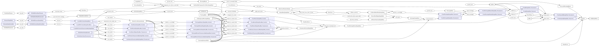
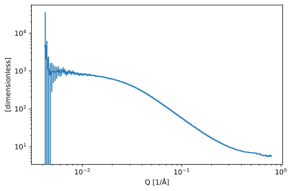
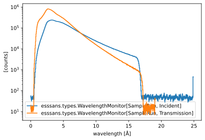
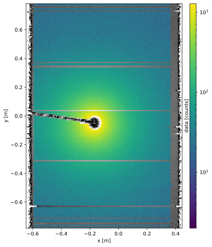
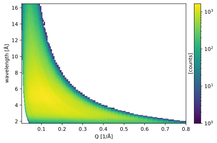
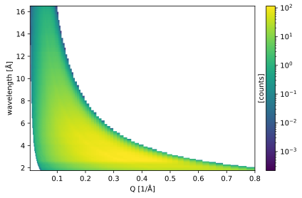
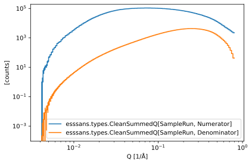
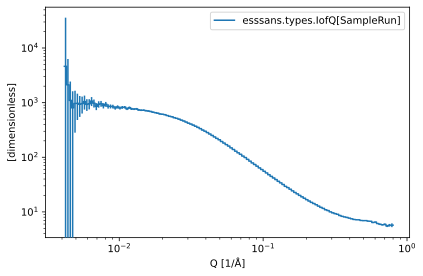

Zoom data reduction#
Introduction#
This notebook is an example of how ESSsans can be used to reduce data from Zoom at ISIS. The following description is kept relatively brief, for more context see the rest of the documentation. In particular the Sans2d notebook may be useful.
There are a few things that are not yet handled:
TOF or wavelength masks
Position corrections from user file (not automatically, have manual sample and detector bank offsets)
Setup#
Imports and configuration#
[1]:
import scipp as sc
import sciline
import esssans as sans
import esssans.isis
from esssans.types import *
Setup input files#
[2]:
params = {
sans.types.DirectBeamFilename: 'Direct_Zoom_4m_8mm_100522.txt',
sans.isis.CalibrationFilename: '192tubeCalibration_11-02-2019_r5_10lines.nxs',
sans.isis.Filename[sans.types.SampleRun]: 'ZOOM00034786.nxs',
sans.isis.Filename[sans.types.EmptyBeamRun]: 'ZOOM00034787.nxs',
sans.isis.SampleOffset: sc.vector([0.0, 0.0, 0.11], unit='m'),
sans.isis.DetectorBankOffset: sc.vector([0.0, 0.0, 0.5], unit='m'),
}
masks = [
'andru_test.xml',
'left_beg_18_2.xml',
'right_beg_18_2.xml',
'small_bs_232.xml',
'small_BS_31032023.xml',
'tube_1120_bottom.xml',
'tubes_beg_18_2.xml',
]
masks = sciline.ParamTable(str, {sans.isis.PixelMaskFilename: masks}, index=masks)
Setup reduction parameters#
[3]:
params[NeXusMonitorName[Incident]] = 'monitor3'
params[NeXusMonitorName[Transmission]] = 'monitor5'
params[WavelengthBins] = sc.geomspace(
'wavelength', start=1.75, stop=16.5, num=141, unit='angstrom'
)
params[QBins] = sc.geomspace(dim='Q', start=0.004, stop=0.8, num=141, unit='1/angstrom')
qxy = {
'Qx': sc.linspace(dim='Qx', start=-0.5, stop=0.5, num=101, unit='1/angstrom'),
'Qy': sc.linspace(dim='Qy', start=-0.8, stop=0.8, num=101, unit='1/angstrom'),
}
# Uncomment to compute I(Qx, Qy) instead of I(Q)
# params[QxyBins] = qxy
params[NonBackgroundWavelengthRange] = sc.array(
dims=['wavelength'], values=[0.7, 17.1], unit='angstrom'
)
params[CorrectForGravity] = True
params[UncertaintyBroadcastMode] = UncertaintyBroadcastMode.upper_bound
params[sans.ReturnEvents] = False
Setup reduction pipeline#
[4]:
providers = sans.providers + sans.isis.providers
providers = providers + (
sans.transmission_from_background_run,
sans.transmission_from_sample_run,
)
pipeline = sciline.Pipeline(providers, params=params)
pipeline.set_param_table(masks)
If Mantid is available, we can use it to load data files. You must configure the DataFolder below to point to the directory containing the data files. Otherwise, we fall back to load intermediate data files that have been prepared for the concrete example in this notebook. If you want to use the workflow with different files you must have Mantid installed:
[5]:
try:
from mantid import ConfigService
import esssans.isis.mantidio
cfg = ConfigService.Instance()
cfg.setLogLevel(3) # Silence verbose load via Mantid
pipeline[sans.isis.DataFolder] = 'zoom_data'
for provider in sans.isis.mantidio.providers:
pipeline.insert(provider)
except ImportError:
import esssans.isis.data
for provider in sans.isis.data.providers:
pipeline.insert(provider)
Reduction#
The reduction workflow#
[6]:
iofq = pipeline.get(IofQ[SampleRun])
iofq.visualize(graph_attr={'rankdir': 'LR'}, compact=True)
[6]:

Running the workflow#
[7]:
da = iofq.compute()
da.plot(norm='log', scale={'Q': 'log'}, aspect='equal')
Downloading file 'ZOOM00034786.nxs.h5.zip' from 'https://public.esss.dk/groups/scipp/ess/zoom/1/ZOOM00034786.nxs.h5.zip' to '/home/runner/.cache/ess/zoom/1'.
Downloading file 'tubes_beg_18_2.xml' from 'https://public.esss.dk/groups/scipp/ess/zoom/1/tubes_beg_18_2.xml' to '/home/runner/.cache/ess/zoom/1'.
Downloading file 'small_BS_31032023.xml' from 'https://public.esss.dk/groups/scipp/ess/zoom/1/small_BS_31032023.xml' to '/home/runner/.cache/ess/zoom/1'.
Downloading file 'andru_test.xml' from 'https://public.esss.dk/groups/scipp/ess/zoom/1/andru_test.xml' to '/home/runner/.cache/ess/zoom/1'.
Downloading file 'small_bs_232.xml' from 'https://public.esss.dk/groups/scipp/ess/zoom/1/small_bs_232.xml' to '/home/runner/.cache/ess/zoom/1'.
Downloading file 'tube_1120_bottom.xml' from 'https://public.esss.dk/groups/scipp/ess/zoom/1/tube_1120_bottom.xml' to '/home/runner/.cache/ess/zoom/1'.
Downloading file 'right_beg_18_2.xml' from 'https://public.esss.dk/groups/scipp/ess/zoom/1/right_beg_18_2.xml' to '/home/runner/.cache/ess/zoom/1'.
Downloading file 'left_beg_18_2.xml' from 'https://public.esss.dk/groups/scipp/ess/zoom/1/left_beg_18_2.xml' to '/home/runner/.cache/ess/zoom/1'.
Downloading file 'ZOOM00034787.nxs.h5' from 'https://public.esss.dk/groups/scipp/ess/zoom/1/ZOOM00034787.nxs.h5' to '/home/runner/.cache/ess/zoom/1'.
Downloading file 'Direct_Zoom_4m_8mm_100522.txt.h5' from 'https://public.esss.dk/groups/scipp/ess/zoom/1/Direct_Zoom_4m_8mm_100522.txt.h5' to '/home/runner/.cache/ess/zoom/1'.
An interpolation is being performed on the direct_beam function. The variances in the direct_beam function will be dropped.
Unzipping contents of '/home/runner/.cache/ess/zoom/1/ZOOM00034786.nxs.h5.zip' to '/home/runner/.cache/ess/zoom/1/ZOOM00034786.nxs.h5.zip.unzip'
[7]:

Inspecting intermediate results#
[8]:
monitors = (
WavelengthMonitor[SampleRun, Incident],
WavelengthMonitor[SampleRun, Transmission],
)
parts = (CleanSummedQ[SampleRun, Numerator], CleanSummedQ[SampleRun, Denominator])
iofqs = (IofQ[SampleRun],)
keys = monitors + (MaskedData[SampleRun],) + parts + iofqs
results = pipeline.compute(keys)
display(sc.plot({str(key): results[key] for key in monitors}, norm='log'))
display(
sans.isis.plot_flat_detector_xy(
results[MaskedData[SampleRun]], norm='log', figsize=(6, 10)
)
)
wavelength = pipeline.compute(WavelengthBins)
display(
results[CleanSummedQ[SampleRun, Numerator]]
.hist(wavelength=wavelength)
.transpose()
.plot(norm='log')
)
display(results[CleanSummedQ[SampleRun, Denominator]].plot(norm='log'))
parts = {str(key): results[key] for key in parts}
parts = {
key: val.sum('wavelength') if val.bins is None else val.hist()
for key, val in parts.items()
}
display(sc.plot(parts, norm='log', scale={'Q': 'log'}))
iofqs = {str(key): results[key] for key in iofqs}
iofqs = {key: val if val.bins is None else val.hist() for key, val in iofqs.items()}
display(sc.plot(iofqs, norm='log', scale={'Q': 'log'}, aspect='equal'))

/home/runner/work/esssans/esssans/.tox/docs/lib/python3.9/site-packages/plopp/core/node.py:132: RuntimeWarning: The input contains a coordinate with unsorted values (x). The results may be unpredictable. Coordinates can be sorted using `scipp.sort(data, dim="to_be_sorted", order="ascending")`.
self._data = self.func(*args, **kwargs)




